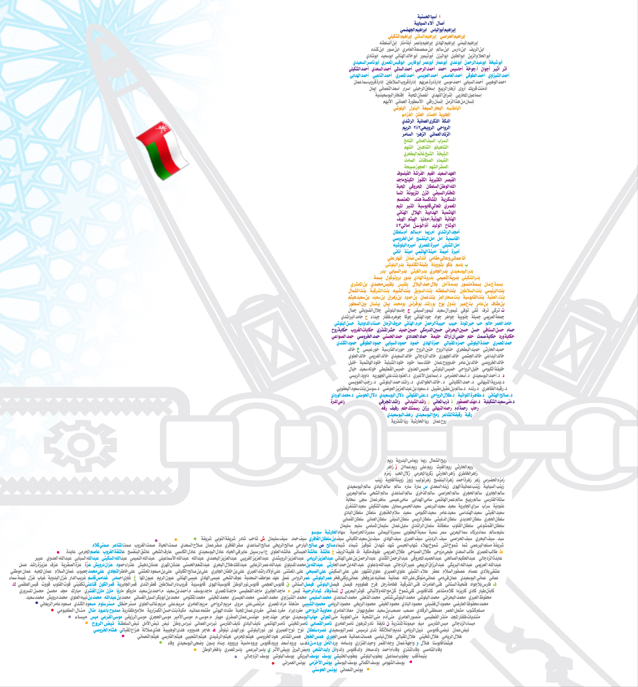

<audio id="2" src="2.mp3" preload="auto"></audio>


<script>

    function f2() {
        var audio = document.getElementById("2");

        if (audio.duration > 0 && !audio.paused) {
            audio.pause();
            audio.currentTime = 0;
        } else {
            audio.play();
        }
    }

</script>


<map name="image-map">

    <area target="_blank" alt="" title="" href="" onclick="javascript:f2(); return false;" coords="878,607,693,722,859,985,1026,876"
        shape="poly">
        
  
  </map>
